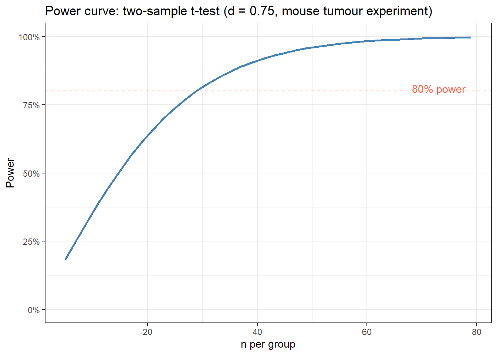
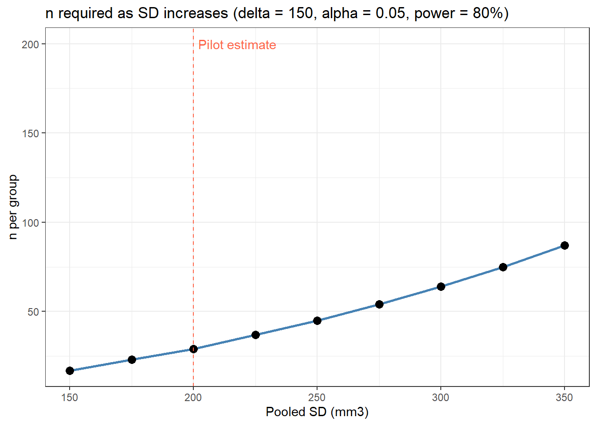
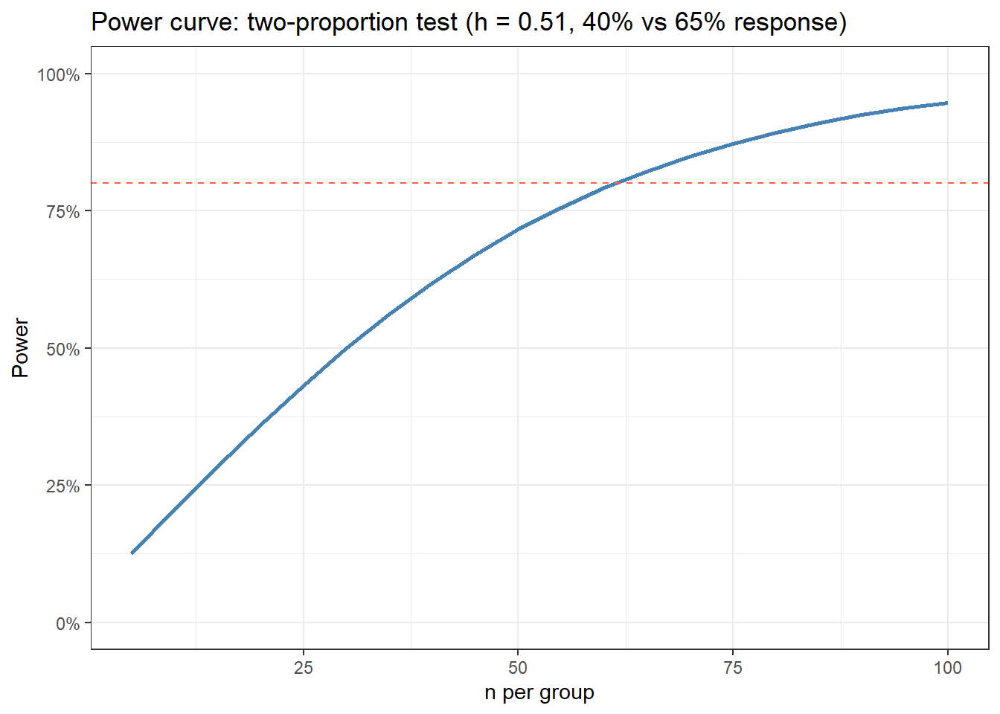
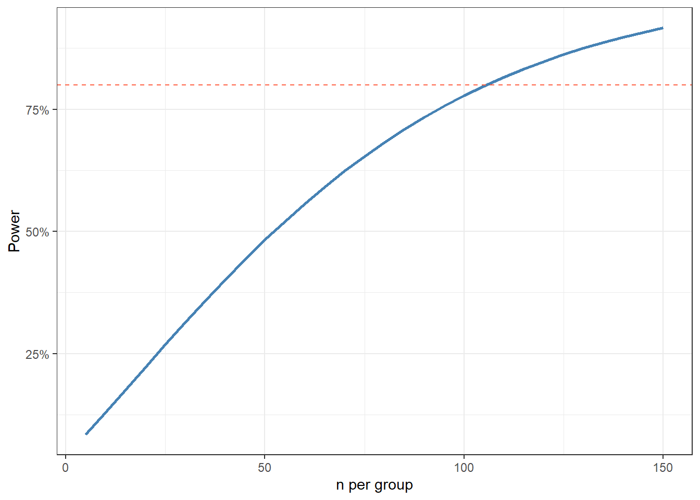

In a taught course, this session fits one teaching block. For self-paced study, split it into two sittings, e.g. the Key Idea, Background, and Example 1 first, Example 2 onward later. Exercise 3 is open-ended and works best as a follow-up using a study you are actually planning.
TipHow to Use the Code in This Session
Every code chunk below is written so you can copy it into your R console (or an R script) and run it yourself, in the order shown. Where you see a “Run It Yourself” box, stop and run the code above it before reading the explanation that follows.
8.1 When Do You Use This?
Tip
You are designing a mouse experiment to test whether a new drug reduces tumour volume. You expect a 20% reduction and want to know: how many mice do I need? Power analysis answers this before you collect a single data point, and prevents you from running an underpowered study where a real effect would go undetected.
NoteTeacher Note
Ask the room: has anyone designed an experiment or study and picked a sample size without a formal power calculation (e.g. “what we could afford” or “what the lab always uses”)? Keep that example in mind – at the end of Example 1 you can return to it and ask whether a power calculation would have suggested a larger or smaller n.
8.2 Learning Objectives
After completing this session you will be able to:
Define statistical power and explain the relationship between power, sample size, effect size, and significance level
Calculate required sample sizes for t-tests and proportion comparisons in R
Compute Cohen’s d and Cohen’s h as standardised effect sizes
Produce a power curve and interpret it
Identify the key planning decisions and their consequences for study design
8.3 The Key Idea: A Trade-Off You Cannot Escape
Estimated time: ~10 minutes (reading)
Before the formulas, here is the honest picture. You are designing a study where you will later run a hypothesis test. That test can make two kinds of mistakes (both discussed in the hypothesis testing session):
False positive (Type I error): You declare an effect when there isn’t one. Controlled by α.
False negative (Type II error): You miss a real effect. Its probability is β. Power = 1 − β.
The brutal reality: you cannot simultaneously make both errors rare without collecting more data. If you want to be very sure you won’t miss a real effect (high power), you need a large sample. If your sample is small, you will miss real effects, no matter how sophisticated your analysis.
Power analysis makes this trade-off explicit before you run the study, so you can make an informed decision about how many participants or animals to recruit.
NoteTeacher Note
Put it to the room directly: “If I want α = 0.01 and power = 99%, what’s the catch?” Lead them to the answer – a much larger sample size than for α = 0.05 and power = 80%. There is no free lunch: the only lever that relaxes the trade-off without raising α or accepting lower power is collecting more data (or finding a way to reduce variability, e.g. a paired design).
8.4 Background: Power and Its Components
Estimated time: ~15 minutes (reading)
Statistical power (\(1 - \beta\)) is the probability of detecting a true effect when one exists. A study with 80% power will correctly reject \(H_0\) in 80% of repeated experiments when the true effect is real.
Four quantities are connected; fix three and you can determine the fourth:
Quantity
Symbol
Typical choice
Significance level
\(\alpha\)
0.05
Power
\(1-\beta\)
0.80
Effect size
\(d\), \(h\), etc.
From pilot data or literature
Sample size
\(n\)
What you want to find
Effect size: The standardised difference between groups, removing units.
For a two-sample t-test: \[d = \frac{\mu_1 - \mu_2}{\sigma_{\text{pooled}}}\]
Cohen’s rough benchmarks: small \(d = 0.2\), medium \(d = 0.5\), large \(d = 0.8\).
What happens when you change each quantity:
Change
Effect on required n
More stringent \(\alpha\) (0.05 → 0.01)
↑ n needed
Higher power (80% → 90%)
↑ n needed
Smaller effect size
↑ n needed
One-sided vs two-sided test
↓ n if one-sided
NoteTeacher Note
Before moving to Example 1, ask students to predict: if the effect size is halved (e.g. d = 0.75 becomes d = 0.375), does the required n roughly double, or roughly quadruple? Because n is roughly proportional to \(1/d^2\) for a two-sample t-test, halving d roughly quadruples n. This sets up the sensitivity analysis later in this example.
8.5 Example 1: Mouse Experiment (Two-Sample t-test)
Estimated time: ~25 minutes (worked example)
You are testing whether a new drug reduces tumour volume. From a pilot experiment (n = 5 per group), you estimate:
Expected reduction in mean tumour volume: 150 mm3
Pooled SD from pilot data: 200 mm3 (so Cohen’s d = 150/200 = 0.75)
alpha = 0.05, power = 0.80, two-sided
# Base Rpower.t.test(delta =150, # expected difference in means (mm3)sd =200, # pooled SD from pilotsig.level =0.05,power =0.80,type ="two.sample",alternative ="two.sided")
Two-sample t test power calculation
n = 28.89962
delta = 150
sd = 200
sig.level = 0.05
power = 0.8
alternative = two.sided
NOTE: n is number in *each* group
Two-sample t test power calculation
n = 28.89959
d = 0.75
sig.level = 0.05
power = 0.8
alternative = two.sided
NOTE: n is number in *each* group
Both functions agree: approximately 29 mice per group (round up). Always round up.
TipRun It Yourself
Run the two chunks above. Both power.t.test() and pwr.t.test() should give n ≈ 28.9 for d = 0.75, α = 0.05, power = 0.80, two-sided – agreement is expected, since pwr.t.test() is just another implementation of the same formula. Round up to 29 mice per group (58 mice total).
8.5.1 Power Curve: n vs Power
Plot power as a function of sample size to see the trade-off and justify your choice:
n_seq <-seq(5, 80, by =2)power_vals <-map_dbl(n_seq, ~pwr.t.test(n = .x,d = d,sig.level =0.05,type ="two.sample",alternative ="two.sided")$power)tibble(n = n_seq, power = power_vals) %>%ggplot(aes(x = n, y = power)) +geom_line(linewidth =1, colour ="steelblue") +geom_hline(yintercept =0.80, linetype ="dashed", colour ="tomato") +annotate("text", x =78, y =0.81, label ="80% power", hjust =1, colour ="tomato") +scale_y_continuous(labels = scales::percent, limits =c(0, 1)) +labs(title ="Power curve: two-sample t-test (d = 0.75, mouse tumour experiment)",x ="n per group", y ="Power" ) +theme_bw()

TipRun It Yourself
Before running the chunk above, predict: at roughly what value of n will the curve cross the dashed 80% line? Then run it and check – it should cross at n ≈ 29, matching the result from power.t.test() and pwr.t.test() above.
8.5.2 Sensitivity Analysis: What If the Pilot SD Was Underestimated?
Pilot studies often underestimate variability. Show how required n grows if SD is larger:
# d decreases as SD grows (fixed delta = 150)sd_seq <-seq(150, 350, by =25)n_required <-map_dbl(sd_seq, ~ceiling(pwr.t.test(d =150/ .x,sig.level =0.05,power =0.80,type ="two.sample")$n))tibble(sd = sd_seq, n_per_group = n_required) %>%ggplot(aes(x = sd, y = n_per_group)) +geom_line(linewidth =1, colour ="steelblue") +geom_point(size =3) +geom_vline(xintercept =200, linetype ="dashed", colour ="tomato") +annotate("text", x =202, y =200, label ="Pilot estimate", hjust =0, colour ="tomato") +labs(title ="n required as SD increases (delta = 150, alpha = 0.05, power = 80%)",x ="Pooled SD (mm3)", y ="n per group" ) +theme_bw()

If the true SD is 300 (not 200), you need more than twice as many mice. Be conservative with your SD estimate.
8.6 Example 2: Clinical Trial (Two Proportions)
Estimated time: ~15 minutes (worked example)
NoteTeacher Note
This example switches from a continuous outcome (tumour volume) to a binary one (treatment response). Ask the room: do they expect the required sample size for a 40% vs 65% response rate to be smaller or larger than the 29 mice per group needed in Example 1? (It will turn out to be larger – proportions generally need bigger samples than a moderate-to-large continuous effect size like d = 0.75.)
You are planning a clinical trial of a new treatment. The control response rate is 40%; you want to detect an increase to 65% with 80% power at alpha = 0.05.
# Cohen's h for proportionsh <-ES.h(0.65, 0.40)cat("Cohen's h:", round(h, 3), "\n")
Difference of proportion power calculation for binomial distribution (arcsine transformation)
h = 0.5060506
n = 61.29835
sig.level = 0.05
power = 0.8
alternative = two.sided
NOTE: same sample sizes
# Cross-check with base Rpower.prop.test(p1 =0.40,p2 =0.65,sig.level =0.05,power =0.80)
Two-sample comparison of proportions power calculation
n = 61.44178
p1 = 0.4
p2 = 0.65
sig.level = 0.05
power = 0.8
alternative = two.sided
NOTE: n is number in *each* group
TipRun It Yourself
Run the chunks above. You should get Cohen's h ≈ 0.506, and both pwr.2p.test() and power.prop.test() give n ≈ 61.3--61.4 per group – round up to 62 per group (124 total). Notice this is more than double the 29 mice per group needed in Example 1, even though both effects (d = 0.75, h ≈ 0.51) would be called “medium to large” – proportions and means are not directly comparable on the same scale.
8.6.1 Power Curve for Proportions
n_seq2 <-seq(5, 100, by =5)pow2 <-map_dbl(n_seq2, ~pwr.2p.test(n = .x,h = h,sig.level =0.05,alternative ="two.sided")$power)tibble(n = n_seq2, power = pow2) %>%ggplot(aes(x = n, y = power)) +geom_line(linewidth =1, colour ="steelblue") +geom_hline(yintercept =0.80, linetype ="dashed", colour ="tomato") +scale_y_continuous(labels = scales::percent, limits =c(0, 1)) +labs(title ="Power curve: two-proportion test (h = 0.51, 40% vs 65% response)",x ="n per group", y ="Power" ) +theme_bw()

NoteWhere to Find Data Like This
Your own pilot data: The best source for SD estimates. Even n = 5 per group gives a useful starting point.
survival::pbc: A published clinical dataset: useful for deriving realistic SD and mean estimates for planning a new study in a similar patient population (see Exercise 1).
pwr package:pwr.t.test(), pwr.2p.test(), pwr.chisq.test(), pwr.anova.test(): covers all common designs.
G*Power software: Free standalone tool (gpower.hhu.de): popular in clinical and behavioural research, good for cross-checking R results.
WarningWhat Can Go Wrong
Estimated time: ~10 minutes (reading)
Using a too-optimistic effect size. Published effect sizes are often inflated by publication bias. If you power your study using an unrealistically large d, you will be underpowered when the true effect is smaller. Be conservative, or use the lower bound of a pilot confidence interval.
Powering for the wrong test. If you plan to use a Wilcoxon test (because your data will be non-normal), power calculations based on power.t.test() are approximate. Simulation-based approaches are more accurate for nonparametric tests.
Forgetting to account for dropout or missing data. Calculate the required \(n\), then inflate by an expected dropout fraction. If you expect 15% dropout, divide your required \(n\) by 0.85.
Multiple primary outcomes. If you have several primary outcomes, adjust \(\alpha\) (e.g., Bonferroni) before running the power calculation. Powering for each outcome at \(\alpha = 0.05\) without correction is overly optimistic.
Confusing power for a one-sided vs two-sided test. A one-sided test requires fewer participants for the same power. Only use a one-sided test if you have a strong, pre-registered directional hypothesis and would not care about an effect in the other direction.
NoteTeacher Note
Quick true/false check, drawing on the points above:
“A Cohen’s d of 1.2 reported in a single published paper with n = 10 per group is a safe basis for your power calculation.” (False – small studies tend to overestimate effect sizes; be conservative.)
“If your power calculation gives n = 25 per group and you expect 15% dropout, dividing 25 by 0.85 tells you how many to recruit per group.” (True – about 30 per group.)
“A one-sided test needs a larger sample size than a two-sided test for the same power.” (False – a one-sided test needs fewer, but is only valid with a strong, pre-registered directional hypothesis.)
8.7 Exercises
NoteTeacher Note
Pair students up for these exercises. Exercise 1 uses the PBC dataset seen in earlier sessions to illustrate a common real-world situation: no pilot data of your own, but a published dataset from a similar population. Before running the solution, ask pairs to predict whether the required n will be closer to the 29 from Example 1 or the 62 from Example 2 – it turns out to be larger than both, which is a useful surprise to discuss (smaller effect size on the log-bilirubin scale than either worked example).
8.7.1 Exercise 1 (Guided): Using Existing Data to Plan a New Study
Estimated time: ~15 minutes
A common situation: you want to plan a new clinical study but have no pilot data. You can use a published dataset with a similar patient population to estimate the pooled SD.
Using survival::pbc, estimate the pooled SD of log(bilirubin) in the two treatment groups. Then calculate the sample size needed to detect a 0.4-unit difference on the log scale.
Load pbc, filter to randomised patients, compute pooled SD of log(bili) by treatment group.
Compute Cohen’s d assuming delta = 0.4.
Run pwr.t.test() at alpha = 0.05, power = 0.80.
Plot the power curve. At what n does power first exceed 80%?
# Sample sizepwr.t.test(d = d_bili, sig.level =0.05, power =0.80, type ="two.sample")
Two-sample t test power calculation
n = 105.6872
d = 0.3871749
sig.level = 0.05
power = 0.8
alternative = two.sided
NOTE: n is number in *each* group
# Power curven_seq <-seq(5, 150, by =5)pw <-map_dbl(n_seq, ~pwr.t.test(n = .x, d = d_bili, sig.level =0.05,type ="two.sample")$power)tibble(n = n_seq, power = pw) %>%ggplot(aes(n, power)) +geom_line(colour ="steelblue", linewidth =1) +geom_hline(yintercept =0.8, linetype ="dashed", colour ="tomato") +scale_y_continuous(labels = scales::percent) +labs(x ="n per group", y ="Power") +theme_bw()

Run the chunk above. You should get pooled SD ≈ 1.033 and Cohen’s d ≈ 0.387 – a smaller effect size than either worked example, which is why pwr.t.test() returns n ≈ 105.7: about 106 per group. The power curve (plotted up to n = 150 here, since the required n is above 100) crosses the 80% line at that same value, n ≈ 106.
# n at 80%res80 <-pwr.2p.test(h = h_mouse, sig.level =0.05, power =0.80)n80 <-ceiling(res80$n)cat("n per group (80% power):", n80, "\n")
n per group (80% power): 60
# With 20% dropoutcat("Enrol per group:", ceiling(n80 /0.80), "\n")
Enrol per group: 75
# At 90% powerres90 <-pwr.2p.test(h = h_mouse, sig.level =0.05, power =0.90)cat("n per group (90% power):", ceiling(res90$n), "\n")
n per group (90% power): 81
8.7.3 Exercise 3 (Open-ended)
Estimated time: 15–30 minutes
For your next planned experiment or study, define:
The primary outcome and the comparison you will make
Expected means/proportions and SD in each group (from pilot data or literature)
\(\alpha\) and desired power
Run the power calculation and produce a power curve. Write one paragraph suitable for an ethics committee submission justifying your sample size.
8.8 Comprehension Check
Estimated time: ~10 minutes (self-test)
What is statistical power? What does “80% power” mean in plain language?
You calculate that you need n = 25 per group. You expect 10% dropout. How many participants should you recruit?
A researcher uses a Cohen’s d of 1.2 from a single published paper with n = 10 per group to power their study. What is the concern?
All else equal, does a one-sided test require more or fewer participants than a two-sided test for the same power?
Your power calculation gives n = 12 per group, but you can only recruit n = 8. What are your options?
NoteAnswers
Statistical power is the probability of correctly rejecting the null hypothesis when the alternative is true. “80% power” means that if the true effect is as assumed, your study will detect it (i.e., return a significant result) in 80% of repeated experiments of the same design.
Divide by the expected retention fraction: \(25 / 0.90 = 28\), so recruit 28 per group (round up).
Single small studies overestimate effect sizes due to sampling variability and publication bias. Using d = 1.2 from a study with n = 10 is likely to be inflated. The true d may be considerably smaller, and the actual study will be underpowered.
A one-sided test requires fewer participants. It allocates the full a to one tail, making the critical threshold easier to reach - but only valid when you have a strong directional hypothesis and would not act on an effect in the opposite direction.
Options: (1) Accept lower power (< 80%) and acknowledge the limitation; (2) increase the minimum effect size you are trying to detect (e.g., only detect a large effect); (3) decrease α (less stringent threshold, which increases power); (4) use a paired design or block on a covariate to reduce within-group variability; (5) pool data across experiments.
8.9 How to Report
NoteReporting a Power Calculation
In a Methods section (grant application or ethics submission):
“Sample size was calculated a priori using the pwr package in R (v4.x). Assuming an effect size of Cohen’s d = 0.5 (medium effect), α = 0.05 (two-sided), and 80% power, a minimum of XX participants per group (YY total) is required. Effect size was estimated from [pilot data / prior literature (cite)]. A 10% dropout allowance was added, giving a final target of ZZ participants per group.”
Key elements to include: - Software or formula used for the calculation - Assumed effect size and its justification (pilot data or literature) - α level and whether one- or two-sided - Target power (usually 80% or 90%) - Any attrition/dropout allowance added
Common reporting errors: - Using a “medium” Cohen’s d = 0.5 without clinical justification: reviewers will question this - Reporting only the total N, not per-group N - Not reporting the assumed effect size - makes the calculation unverifiable - Post-hoc power calculations on observed effect sizes - these are misleading and now widely discouraged
8.10 Further Reading
Cohen (1988): Statistical Power Analysis for the Behavioral Sciences - the original reference for effect sizes and power tables
Bland (2015): Sample size chapters in An Introduction to Medical Statistics